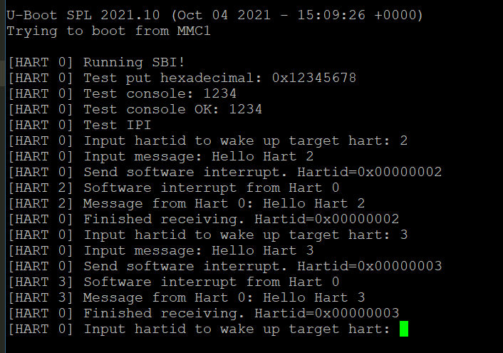

启动 S7 核#
硬件背景#
以下是一些相关的特性，具体参见官方文档
Feature |
Description |
|---|---|
ISA |
RV64IMAC |
Modes |
Machine Mode, User Mode |
L1 i-cache |
16KiB 2-way i-cache |
DTIM |
8 KiB DTIM |
L2 Cache |
2 MiB 16-way L2 cache with 4 banks |
ECC |
Single error correction, double error detection on the DTIM and L2 cache |
Fast IO |
Present |
PMP |
8 regions with a granularity of 64 bytes |
启动S7核，核心的问题在于S7核只有M态和U态，官方给出的boot链中，U-Boot是工作在S态的，所以需要在官方boot链的基础上，加入自己的启动代码。
启动准备#
在整个boot链中，我们不能修改的部分是ZSBL，也就是板子出厂时烧写在ROM中的代码，这段代码主要工作是根据板子上的MSEL控制开关，由Hart 0将更复杂的U-Boot SPL程序从分区加载到L2 LIM中执行，对应地址为
0x08000000。如果想移除U-Boot SPL，并添加自己的FSBL（First Stage Bootloader），需要对启动位置（SD卡，Flash等）的第一个分区（GUID 5B193300-FC78-40CD-8002-E86C45580B47）进行覆写。对于SD卡，具体操作方法为直接执行如下命令：
# 将SD卡制作成如下分区格式
sudo sgdisk -g --clear -a 1 \
--new=1:34:2081 --change-name=1:spl --typecode=1:5B193300-FC78-40CD-8002-E86C45580B47 \
--new=2:2082:10273 --change-name=2:uboot --typecode=2:2E54B353-1271-4842-806F-E436D6AF6985 \
--new=3:16384:282623 --change-name=3:boot --typecode=3:0x0700 \
--new=4:286720:13918207 --change-name=4:root --typecode=4:0x8300 \
/dev/sdX
# 覆写FSBL的二进制文件
dd if=<your fsbl>.bin of=/dev/sdX seek=34
不建议替换或修改U-Boot SPL，因为这一部分进行了一系列的硬件初始化工作，为之后的程序执行提供了硬件环境，且后续阶段代码的修改更加灵活，相比之下，修改U-Boot SPL的意义也不是很大。如果对FSBL的具体操作感兴趣，可阅读U-Boot开源代码，但由于U-Boot已经相当完善，项目过于庞大，不适合上手，建议阅读上一代
Hifive Unleashed启动流程，采用的是裸机程序。
启动流程#
SD卡默认分区简介#
/spl：U-Boot SPL/uboot：U-Boot Proper、OpenSBI generic FW_DYNAMIC、DTB with U-Boot overlay/boot：FAT16分区，包含设置信息(EXTLINUX configuration)，内核镜像以及设备树信息(device tree blob)/root：EXT4分区，包含由FUSDK构建的文件系统
制作镜像#
首先准备好制作镜像时的分区配置信息：
/dts-v1/;
/ {
description = "tCore Image";
#address-cells = <1>;
images {
sbi {
data = /incbin/("../sbi/sbi.bin");
description = "SBI for tCore";
type = "firmware";
os = "sbi";
arch = "riscv";
compression = "none";
load = <0x80000000>;
entry = <0x80000000>;
};
kernel {
data = <0x0 0x0 0x0 0x0>;
description = "tCore Image";
type = "standalone";
os = "tCore";
arch = "riscv";
compression = "none";
load = <0x80200000>;
};
fdt-1 {
description = "hifive-unmatched-a00";
type = "flat_dt";
compression = "none";
data = [...];
};
};
configurations {
default = "unmatched-sdcard";
unmatched-sdcard {
description = "hifive-unmatched-a00";
firmware = "sbi";
loadables = "kernel";
fdt = "fdt-1";
};
};
};
如上面的分区配置所示，完整的文件参考，完整文件中包含了U-Boot Proper可识别的fdt信息，且原始的配置信息中，Kernel位置的是U-Boot Proper文件，已经将默认的Kernel位置的data注释掉了，因此，如果想在S7核上运行内核，可以选择将内核的二进制放在Kernel的位置；如果在U7核上运行内核，可以采用官方默认的U-Boot的启动办法。但是如果想不同的核同时运行不同的内核，欢迎持续关注RustSBI的更新情况，后续会引入功能：SBI根据
misa等信息判断当前硬件支持的特权级别，并选择不同的加载方式。执行以下命令覆写SD卡对应分区：
mkimage -f sd-image.dts target.img
dd if=target.img of=/dev/sdX seek=2082
运行实例#
利用以上的流程，在
Hifive Unmatched上运行多核通信的简易demo，用于说明SBI启动后主要进行的工作和相关硬件特性的利用。
首先进入sbi文件夹，插入SD卡后，修改Makefile中
image任务的of内容为SD卡挂载的位置（可通过sudo fdisk -l查看），执行make image命令即可制作镜像并将镜像写入SD卡演示用SBI入口地址为
0x80000000，因为U-Boot SPL在初始化结束并加载第二分区后，会默认跳转到这一地址执行。对于
uart、clint等设备，读写采用原子操作，参考了OpenSBI相关实现阻塞通信逻辑：
小核和大核均清空clint软件中断，写入mie开启软件中断，然后大核进入循环等待消息；
小核向大核发出中断后，在预先协商好的地址
0x80100000处写入通信内容，然后进入wfi等待唤醒；大核接收到软件中断，从循环中跳出并输出一段信息报告当前硬件Hartid，并在串口打印小核之前在
0x80100000写入的通信内容，最后向小核发送软件中断，进入wfi等待唤醒；小核收到软件中断后重新执行以上步骤，由此便实现了多核之间的简易通信
等待软件中断相关代码：
int wait_ipi(size_t hartid) {
// loop and wait for software interrupt
while (!(read_csr(mip) & MIP_MSIP))
wfi();
// receive software interrupt now
clint_clear_soft(hartid);
return 0;
}
运行效果：

启动日志#
（2021.11.18）OpenSBI首先进行一系列初始化，然后进行二级跳转到uboot，由于uboot运行在S态，无法在S7上加载程序，因此要重新配置OpenSBI
论坛上的一个建议：可以通过向S7发送软件中断来唤醒，让S7跳转到事先准备好的中断处理程序中，最后返回到S7上运行的OS中
OpenSBI：系统调用；BootLoader
U-Boot最新版本有小问题，建议使用2019版本
（2021.11.25）关于编译链的简介，可以看出需要从bitbake的配置文件入手，对编译依赖进行管理，可能会修改U-Boot SPL源码
（2021.11.27）阅读Freedom-U-SDK的生成的环境和配置文件，发现在
meta-sifive中关于unmatched的相关配置（2021.11.30）U54-MC多核启动流程：
U54和U74架构基本一致
BootROM将SD卡指定分区中的代码加载到L2
L2可运行自己的多核代码，替代U-Boot SPL的功能
启发：U-Boot虽然好用，但是过重，不容易入手修改且调试困难，因此需要参考U-Boot SPL中的配置再重新编写启动代码
（2021.12.02）考试结束，继续实验，试图分离U-Boot SPL失败，不过定位到了配置代码，此外在官网找到了freedom-fu540-c000-bootloader，也是从前天的讲座中获得了提示，开始往u540的板子相关工具链寻找参考，发现确实这方面已经非常完善了，于是开始拿来复用和修改，修改过程中加入了小核的启动，加入新的想法：
增加交互控制，通过串口告知启动小核还是大核
由于有两个串口，可以分别启动进行展示（进行hartid的判断，对串口的MMIO地址进行选择
大小核通过MMIO的原子操作可以实现简单的通信
（2021.12.03）进行了以下几个方面代码的编写和学习：
GPT（GUID分区表）
SD
FDT（设备树
（2021.12.04）FSBL运行失败，和luojia讨论后，决定先结合OpenSBI、FSBL、U-Boot实现可以多核通信的SBI
（2021.12.05）编写SBI代码，相关说明参见SBI-SMP
（2021.12.06）调试SBI，尝试在FU740上运行制作好的镜像
（2021.12.07）调整串口驱动，Debug
（2021.12.08）成功在小核上运行程序并看到串口输出
（2021.12.09）完成大小核简单通信demo，当前通信采用阻塞方式，具体参见SBI文档
（2021.12.10）尝试完善SBI的中断异常处理（未完成）
（附）相关工具#
U-Boot 常用命令#
loadb：通过串口下载二进制文件
printenv：打印环境变量，包括启动设备和起始地址等
setenv：设置环境变量，例如boot之后运行的脚本选项：
baudrate：串口波特率，默认为115200
boot_targets：列表包含nvme0，usb0，mmc0等，其中nvme0为SSD卡，我们拿到的主机上已装好了ubuntu系统；usb0为外接USB设备，mmc0即为SD卡，将该选项改为mmc0即可；
此外还包含一些网络相关的配置，可以从远程加载系统
fdt print /cpus；fdt list /cpus：查看设备信息，如图；可以看到cpu相关信息，大核和小核的架构不同，小核不支持页表，不支持浮点运算，且没有d-cache
U-Boot 目录结构#
/arch：与指令架构相关的代码，内容包括cpu相关代码，设备树相关代码，例如fu740的相关代码位于
/arch/riscv/cpu/fu740下/boot：
/board：与开发板相关的代码，例如unmatched的代码位于
/board/sifive/unmatched下/common：通用函数代码，包括环境加载、终端交互等
/include：头文件和开发板配置文件，所有开发板的配置文件在
/include/configs目录下，例如unmatched相关配置在/include/configs/sifive-unmatched.h内/drivers：设备驱动程序，主要有网络接口、串口等，例如sifive串口驱动位于
/drivers/serial/serial_sifive.c内
SPL#
SPL（Secondary Program Loader）是U-Boot第一阶段执行的代码，负责将U-Boot第二阶段执行的代码加载到内存中运行
SPL复用了U-Boot里面的代码，用来衔接SRAM和U-Boot
通过编译选项将SPL和U-Boot代码分离、复用，即
CONFIG_SPL_BUILD，在make Kconfig的时候使能，最终编译生成的二进制文件有u-boot-spl、u-boot-spl.bin以及u-boot-spl.map
risc-v gcc#
-march：指定目标平台所支持的模块化指令集合
-mabi：指定目标平台所支持的ABI函数调用规则
前缀
ilp32表示32位架构，int和long长度为32位，long long长度为64位前缀
lp64表示64位架构，int长度为32位，long长度为64位后缀类型：
无后缀：如果使用了浮点类型的操作，直接使用RISC-V浮点指令进行支持，但是当浮点数作为函数参数进行传递时，浮点数需要通过堆栈进行传递
f：表示目标平台支持硬件单精度浮点指令，且浮点数作为函数参数进行传递时，单精度浮点数可以通过寄存器传递，但双精度浮点数需要通过堆栈进行传递
d：表示目标平台支持硬件双精度浮点指令，且浮点数作为函数参数进行传递时，单精度和双精度都可以通过寄存器传递
-mcmodel：用于指定寻址范围的模式：
-mcmodel=medlow：寻址范围固定在-2GB到2GB的空间内-mcmodel=medany：寻址范围可以在任意4GB空间内
由于S74核只支持IMAC指令集，因此本项目中采用
-march=rv64imac -mabi=lp64 -mcmodel=medany的组合
Sifive FUSDK#
主要用途
为Qemu、Unleashed、Unmatched构建预先定义的磁盘镜像
构建个性化第三方镜像
基于OpenEmbedded（提供交叉编译环境，为嵌入式系统构建完整的Linux
构建Bootloader（OpenSBI、U-Boot、U-Boot SPL
构建Device Tree（DTB
构建Linux镜像
磁盘分区
以
demo-coreip-cli镜像为例，在Unmatched上构建镜像，相关命令如下：
mkdir riscv-sifive && cd riscv-sifive
repo init -u git://github.com/sifive/freedom-u-sdk -b 2021.10 -m tools/manifests/sifive.xml
repo sync
# optional
repo start work --all
# Setting up Building Environment
bash ./freedom-u-sdk/setup.sh
# BitBake
PARALLEL_MAKE="-j 4" BB_NUMBER_THREADS=4 MACHINE=unmatched bitbake demo-coreip-cli
最后将镜像写入uSD Card：
xzcat demo-coreip-cli-unmatched.wic.xz | sudo dd of=/dev/sdX bs=512K iflag=fullblock oflag=direct conv=fsync status=progress
BitBake#
BitBake是一个Python程序，由用户创建的配置驱动，为用户指定的目标执行用户创建的任务（recipes）；解决依赖关系；提供可配置的方式，将一些常见的任务例如下载源码包、解压、运行configure、运行make等进行抽象封装和重用
BitBake可以从这里进行下载，按照文档的要求，将仓库下载到指定地址后，可以在
.bashrc或.zshrc等配置文件中添加（建议先根据需求确定好版本，执行bitbake --version检查安装是否成功及当前版本
export PATH=/path/to/bbtutor/bitbake/bin:$PATH
export PYTHONPATH=/path/to/bbtutor/bitbake/lib:$PYTHONPATH
GPT#
// GPT header
typedef struct {
uint64_t signature;
uint32_t revision;
uint32_t header_size;
uint32_t header_crc;
uint32_t reserved; // Reserved part must be 0x0
uint64_t current_lba;
uint64_t backup_lba;
uint64_t first_usable_lba;
uint64_t last_usable_lba;
gpt_guid disk_guid;
uint64_t partition_entries_lba;
uint32_t num_partition_entries;
uint32_t partition_entry_size;
uint32_t partition_array_crc;
uint32_t padding;
} gpt_header;
特点：
64位LBA，可管理空间很大
128位GUID标识，不容易产生冲突
不限制分区数量
磁盘首尾各带一个表头，抗性较高
提供CRC校验